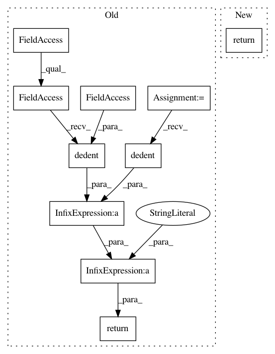

c8804a63fece7a67006a7420a5ada14869f4bcf4,tensorflow_datasets/scripts/documentation/dataset_markdown_builder.py,,display_citation,#Any#,208
Before Change
def display_citation(builder):
if builder.info.citation:
return textwrap.dedent(
f\
* **Citation**:
```
) + tfds.core.utils.dedent(builder.info.citation) + "\n```\n"
return ""
def display_figure(visu_doc_util, builder):
After Change
def display_citation(builder):
if builder.info.citation:
return f\
* **Citation**:
```
{tfds.core.utils.indent(builder.info.citation, " ")}
```
return ""
def display_figure(visu_doc_util, builder):
In pattern: SUPERPATTERN
Frequency: 3
Non-data size: 10
Instances
Project Name: tensorflow/datasets
Commit Name: c8804a63fece7a67006a7420a5ada14869f4bcf4
Time: 2020-07-21
Author: cs17btech11040@iith.ac.in
File Name: tensorflow_datasets/scripts/documentation/dataset_markdown_builder.py
Class Name:
Method Name: display_citation
Project Name: tensorflow/datasets
Commit Name: c8804a63fece7a67006a7420a5ada14869f4bcf4
Time: 2020-07-21
Author: cs17btech11040@iith.ac.in
File Name: tensorflow_datasets/scripts/documentation/dataset_markdown_builder.py
Class Name:
Method Name: display_manual
Project Name: tensorflow/datasets
Commit Name: c8804a63fece7a67006a7420a5ada14869f4bcf4
Time: 2020-07-21
Author: cs17btech11040@iith.ac.in
File Name: tensorflow_datasets/scripts/documentation/dataset_markdown_builder.py
Class Name:
Method Name: display_description